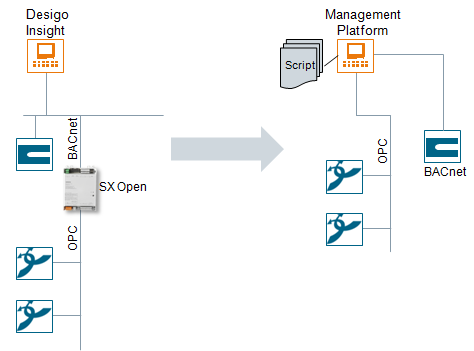
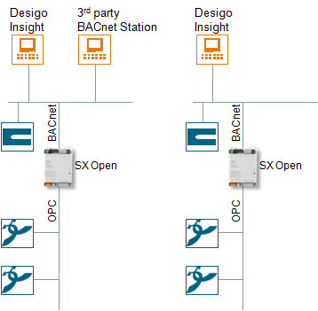
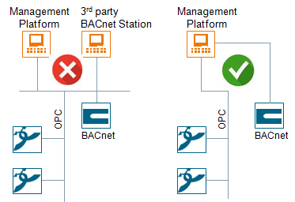
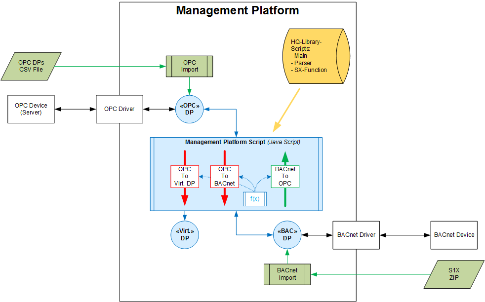
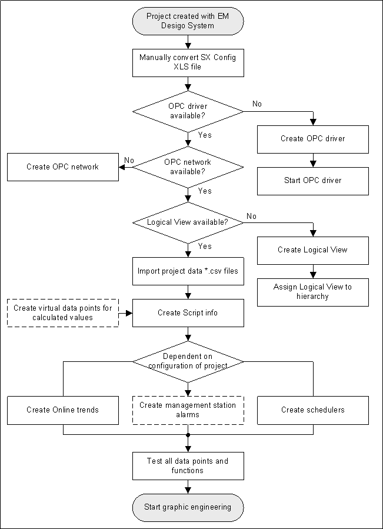
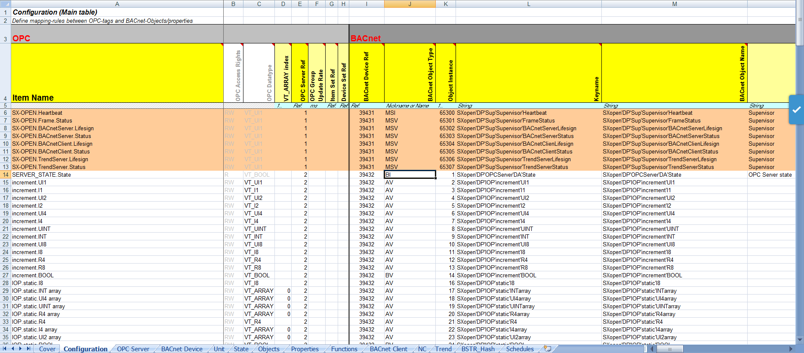
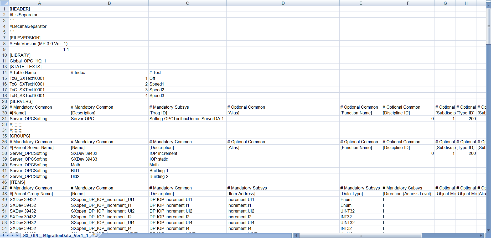
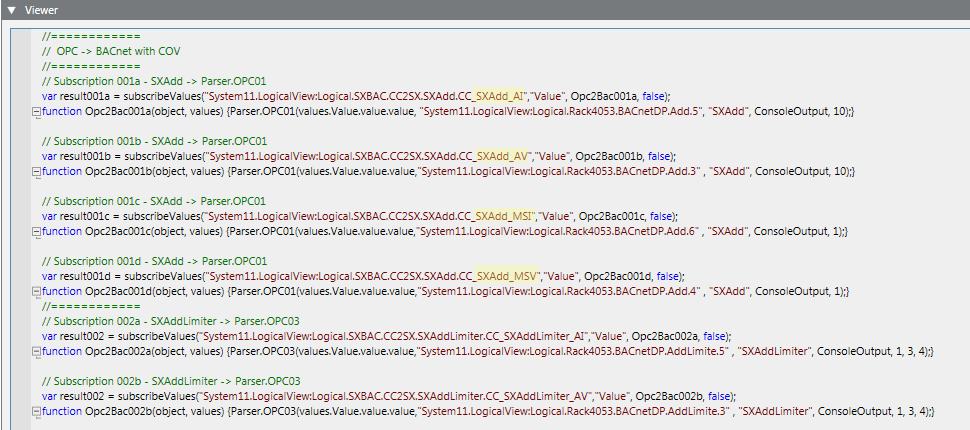

Migrating from SX Open to the Management Platform
SX Open is a Desigo Open product to integrate third-party devices or entire systems in Desigo using the best communication protocol for the applicable device or system. The phase-out of Desigo Insight means that OPC third-party devices can no longer be integrated in the same way in the Desigo CC management platform. The phase out of SX Open software is accomplished by directly integrated OPC data point in Desigo CC and converting the values by script (see Topology example).
Among the main features of integration in Desigo CC are:
- The SX Open software (device) no longer be used.
- The existing project SX Open configuration file must be manually converted to a new Desigo CC OPC import format.
- OPC data points that must perform a function as BACnet data points, are supplemented in a script with the corresponding SX Open function:
- This assignment must occur for each OPC data point.
- The required functions must be performed as COV or polling.
- The required scripts are available in the Desigo CC library;
- Virtual Desigo CC data points can be created, for example, when an average must be calculated from two OPC data points.
- BACnet data points may need to be configured in Desigo CC afterwards (for example, Alarms), depending on use and/or quality of the OPC import file.
- Trend objects and schedules are manually set up in Desigo CC.
- No new values can be updated between OPC and BACnet if the Desigo CC management platform is unavailable.
Topology Example

Integrating Existing SX Open in Desigo Insight
Integration in Desigo is on the automation level with a mapping of third-party data points to BACnet objects. SX OPC is a configurable Gateway between subsystem and BACnet. The Desigo PX automation station as well as the Desigo Insight management station have access on the network to the integrated (third-party) data points.
Gateway OPC to BACnet
SX Open's primary tasks is to mapping values from third-party devices or systems, available via an OPC interface, to corresponding BACnet objects and their properties. The OPC item assignment to BACnet object/property must be configured in an Excel worksheet.
Mapping is bi-directions, i.e. it can also be commanded as needed from BACnet to OPC. On the OPC side, the interface data access DA is supported.
As unique feature is that the OPC values can be manipulated by intermediate function blocks prior to mapping to BACnet.
Mapping Signals and Functions
This can occur, on the one hand, for data conversion (signal mapping) or for calculated values (function mapping).
A tool maps the functions from arithmetic and logical operations and provides the information in the library file in collected form.
Alarm and Trend
SX Open supports the system functions alarm and trend.
Schedule
SX Open supports time switching local BACnet objects.
Desigo Insight Topology Examples
Desigo Insight and/or a third-party BACnet management station can be connected via the SX Open Gateway.

Direct Integration on the Management Platform
Direct integration of OPC in the Desigo CC management platform is easy as long as not third-party BACnet stations are connected. Direct integration in Desigo CC is not possible if there are other third-party BACnet stations. The reason is that the Desigo CC management platform is not designed to be a server and the SX Open device is no longer available. As a result, there is not exchange of data from and to the third-party BACnet station. In this case, you must first clarify with the customer, whether this third-party BACnet station is required. There can be no integration on the Desigo CC management platform if the third-party BACnet station is still required.

Technical Implementation
The selected technical solution calls for manually converting the existing SX Open configuration file to an OPC import file. After an OPC import:
- Data points must be supplemented with a script for forwarding to a BACnet device;
- Data points that have a system function (schedules or trend), must be manually set up in Desigo CC;
- The events set up in the OPC import file are checked.
- All other OPC data points can be used without additional processing (for example, display in the graphic) in Desigo CC.
- The three script examples are saved to a library. Only one script must be customized for migration.

Explanation:
- There are only one-way actions (OPC -> BACnet or BACnet -> OPC).
- The SX Open functions must be employed as needed.
Subscription
To an OPC or BACnet data point:
- In principle, a change of value to an OPC device starts a function that writes the changed value to the corresponding BACnet data point and vice-versa.
- The OPC/BACnet driver communicates automatically with the connected OPC or BACnet data point and the corresponding element of the OPC or BACnet devices. A subscription to an OPC or BACnet data point is all that is required to be able to react to a device change of value.
Polling
To an OPC or BACnet data point:
- Polling is performed with read/write in a time loop.
- This variant results in increased network load, since Desigo CC queries values at a relatively short interval. Using various polling cycles can optimize the network load.
Overall Workflow

Convert the SX Open Configuration File
The current SX Open configuration file must be available to migrate from SX Open to Desigo CC.

The corresponding information from the SX Open configuration file must be manually converted to an OPC import file. An OPC file template, OPC_ ConfigurationData_Ver1_1.csv , is available in folder [Installation Drive]:\[Installation Folder]\GMSMainProject\Profiles\OPCDataTemplate.

Assignment List: Data point type
The table displays the information available from columns C and J for the new data types.
SX Open Configuration File | OPC Configuration File | |||
Column C [OPC Data Type] | Column B [OPC Access Rights]] | Column J [BACnet Object Type] | Column E [Data Type] | Comments |
DEFAULT_MAPPING | RW | AV |
|
|
DEFAULT_MAPPING | R | AI |
|
|
DEFAULT_MAPPING | W | AO |
|
|
VT_BOOL | RW | BV | BOOL |
|
VT_BOOL | R | BI | BOOL |
|
VT_BOOL | W | BO | BOOL |
|
VT_I1 | RW | AV | INT16 |
|
VT_I1 | R | AI | INT16 |
|
VT_I1 | W | AO | INT16 |
|
VT_I2 | RW | AV | INT32 |
|
VT_I2 | R | AI | INT32 |
|
VT_I2 | W | AO | INT32 |
|
VT_I4 | RW | AV | INT64 |
|
VT_I4 | R | AI | INT64 |
|
VT_I4 | W | AO | INT64 |
|
VT_I8 | RW | AV |
| Not supported |
VT_I8 | R | AI |
| Not supported |
VT_I8 | W | AO |
| Not supported |
VT_UI1 | RW | AV | UINT16 |
|
VT_UI1 | R | AI | UINT16 |
|
VT_UI1 | W | AO | UINT16 |
|
VT_UI2 | RW | AV | UINT32 |
|
VT_UI2 | R | AI | UINT32 |
|
VT_UI2 | W | AO | UINT32 |
|
VT_UI4 | RW | AV | UINT64 |
|
VT_UI4 | R | AI | UINT64 |
|
VT_UI4 | W | AO | UINT64 |
|
VT_UI8 | RW | AV |
| Not supported |
VT_UI8 | R | AI |
| Not supported |
VT_UI8 | W | AO |
| Not supported |
VT_R4 | RW | AV | FLOAT32 |
|
VT_R4 | R | AI | FLOAT32 |
|
VT_R4 | W | AO | FLOAT32 |
|
VT_R8 | RW | AV | FLOAT64 |
|
VT_R8 | R | AI | FLOAT64 |
|
VT_R8 | W | AO | FLOAT64 |
|
VT_BSTR | RW | MSV | Enum |
|
VT_BSTR | R | MSI | Enum |
|
VT_BSTR | W | MSO | Enum |
|
VT_ARRAY of VT_BOOL | RW | BV |
| Not supported |
VT_ARRAY of VT_BOOL | R | BI |
| Not supported |
VT_ARRAY of VT_BOOL | W | BO |
| Not supported |
VT_ARRAY of VT_I1 | RW | AV |
| Not supported |
VT_ARRAY of VT_I1 | R | AI |
| Not supported |
VT_ARRAY of VT_I1 | W | AO |
| Not supported |
VT_ARRAY of VT_I2 | RW | AV |
| Not supported |
VT_ARRAY of VT_I2 | R | AI |
| Not supported |
VT_ARRAY of VT_I2 | W | AO |
| Not supported |
VT_ARRAY of VT_I4 | RW | AV |
| Not supported |
VT_ARRAY of VT_I4 | R | AI |
| Not supported |
VT_ARRAY of VT_I4 | W | AO |
| Not supported |
VT_ARRAY of VT_I8 | RW | AV |
| Not supported |
VT_ARRAY of VT_I8 | R | AI |
| Not supported |
VT_ARRAY of VT_I8 | W | AO |
| Not supported |
VT_ARRAY of VT_UI1 | RW | AV |
| Not supported |
VT_ARRAY of VT_UI1 | R | AI |
| Not supported |
VT_ARRAY of VT_UI1 | W | AO |
| Not supported |
VT_ARRAY of VT_UI2 | RW | AV |
| Not supported |
VT_ARRAY of VT_UI2 | R | AI |
| Not supported |
VT_ARRAY of VT_UI2 | W | AO |
| Not supported |
VT_ARRAY of VT_UI4 | RW | AV |
| Not supported |
VT_ARRAY of VT_UI4 | R | AI |
| Not supported |
VT_ARRAY of VT_UI4 | W | AO |
| Not supported |
VT_ARRAY of VT_UI8 | RW | AV |
| Not supported |
VT_ARRAY of VT_UI8 | R | AI |
| Not supported |
VT_ARRAY of VT_UI8 | W | AO |
| Not supported |
VT_ARRAY of VT_R4 | RW | AV |
| Not supported |
VT_ARRAY of VT_R4 | R | AI |
| Not supported |
VT_ARRAY of VT_R4 | W | AO |
| Not supported |
VT_ARRAY of VT_R8 | RW | AV |
| Not supported |
VT_ARRAY of VT_R8 | R | AI |
| Not supported |
VT_ARRAY of VT_R8 | W | AO |
| Not supported |
VT_ARRAY of VT_BSTR | RW | MSV |
| Not supported |
VT_ARRAY of VT_BSTR | R | MSI |
| Not supported |
VT_ARRAY of VT_BSTR | W | MSO |
| Not supported |
Assignment: Notification Classes
SX Open Notification Class -> Desigo CC Alarm classes | ||
Notification class | Desigo Insight | Desigo CC |
11 | Urgent alarm - simple | LifeSafety_NoAckNoReset |
12 | Urgent alarm - basic | LifeSafety_NoReset |
13 | Urgent alarm - extended | LifeSafety |
21 | High prio alarm - simple | HighPriorityAlarm_NoAckNoReset |
22 | High prio alarm - basic | HighPriorityAlarm_NoReset |
23 | High prio alarm - extended | HighPriorityAlarm |
31 | Normal alarm - simple | MediumPriorityAlarm_NoAckNoReset |
32 | Normal alarm - basic | MediumPriorityAlarm_NoReset |
33 | Normal alarm - extended | MediumPriorityAlarm |
41 | Low prio alarm - simple | LowPriorityAlarm_NoAckNoReset |
42 | Low prio alarm - basic | LowPriorityAlarm_NoReset |
43 | Low prio alarm - extended | LowPriorityAlarm |
51 | User defined alarm - simple | Information_NoAckNoReset |
52 | User defined alarm - basic | Information_NoReset |
53 | User defined alarm - extended | Information |
61 | Offline trend alarm - simple | Information_NoAckNoReset |
62 | Offline trend alarm - basic | Information_NoReset |
63 | Offline trend alarm - extended | Information |
Alarm type operators
You must set the following fields to configure a management alarm for a data point:
- AlarmClass: Alarm class for an alarm.
- Alarm Type: The condition for outputting an alarm, see table below.
- AlarmValue: The value or value range outputted for an alarm.
- EventText: The text displayed when outputted an alarm.
- NormalText: The text displayed when muting an alarm.
- UpperHysteresis: The upper limit for an alarm value, above which an alarm is generated.
- LowerHysteresis: The lower limit for an alarm value, under which an alarm is generated.
Alarm type operators and their meaning | |||
Alarm type operators | Operand | Meaning | Associated alarm category |
OR | = | Equals (binary only) | Discrete |
EQ | || | OR | |
NE | !|| | NOR | |
BET | .. | In the range of two values | |
NBET | !.. | Not in the range of two values | |
LT | < | Less than | Modulating |
LE | <= | Less Than or Equal To | |
GT | > | Greater than | |
GE | >= | Greater than or equal to | |
Fault Conditions for Management Station Alarms
- The following alarm type values are supported: EQ (equals), NE (not equal to), LT (less than), LE (less than or equal to), GT (greater than), GE (greater than or equal to), BET (between), NBET (not between).
- Only alarm type EQ (equals) is supported on binary (Boolean) points.
- Only one alarm can be indicated on binary (Boolean) points.
Array Response in System
Note the following on information in the SX Open conversion file for arrays: One SX Open array (consisting of multiple entries) is compiled and is only one entry for the Desigo CC configuration file.
Existing Array Response with SX Open
Array Response from OPC -> SX Open | ||
System | Data point | Property |
OPC | OPC Array | [V1 V2 V3] |
SX Open | SX V1 | V1 |
SX V2 | V2 | |
SX V3 | V3 | |
New Array Response with the Management Platform
Array Response from OPC -> Desigo CC | ||
System | Data point | Property |
OPC | OPC Array | [V1 V2 V3] |
Desigo CC | Array | [V1 V2 V3] |
Script Example
The following codes are an example of how to use them instead of SX Open. The exact function application is described in the script as a comment.

///ApplicationView_Logics_Scripts_SXOpenMainScript.SXOpenMainScript.v=1_8.b=3_1_0021_0.10001.SX Open Main Script.
///ApplicationView_Logics_Scripts_SXOpenMainScript.SXOpenMainScript.v=1_8.b=3_1_0021_0.10001.SX Open Main Script.
// The Main Script is an example to show how to use the SX Open Replacement in Management Platform
// Version 1.8 (31.01.2019)
// Strict mode makes it easier to write "secure" code, introducing better error-checking
'use strict';
//---------------------------
// SX Open Main Script
//---------------------------
/*
---------------------------------------------------------------------------------
Syntax of a subscription (3 lines):
----------------------------------
line 1: // subscription 001 - SXAdd -> Parser.OPC01
line 2: var result001 = subscribeValues(<objectReference>,<propertyNames>,<callback>,<initialValue>);
line 3: function Opc2Bac001(object, values) {<Parser.OPCxxx>(object,<objectReference>,<"SX Open Function">,Param01[...Param40]);}
---------------------------------------------------------------------------------
-- Parser function are used in case of number of parameter ---------------
Parser.OPCxx are used for OPC->BACnet
Parser.BACxx are used for BACnet->OPC
-----------------------------------------
Parser.OPC00 is used for: SXBoolToMulti, SXMultiToBool
Parser.OPC01 is used for: SXAdd, SXBitPos, SXConst, SXDiv, SXEqual, SXMul, SXSubstract, SXWriteBit, SXDirect
Parser.OPC02 is used for: SXBetween, SXSelectBool, SXBitSet, SXScaleBAC
Parser.OPC03 is used for: SXAddLimiter, SXSelectVal1
Parser.OPC16 is used for: SXAvg
Parser.OPC32 for: SXIntToMulti, SXMulitToInt, SXMulitState2BstrHash, SXBstrHash2MultiState, SXIntFromBits
Parser.OPC40 is NOT IMPLEMENTED as this SX Open Function is not defined!!!
----------
Parser.BAC00 is used for; SXBoolToMulti, SXMultiToBool,
Parser.BAC01 is used for: SXAdd, SXBitPos, SXConst, SXDiv, SXEqual, SXMul, SXSubstract, SXWriteBit, SXDirect
Parser.BAC02 is used for: SXBetween, SXSelectBool, SXBitSet, SXScaleOPC
Parser.BAC03 is used for: SXAddLimiter, SXSelectVal1
Parser.BAC16 is used for: SXAvg
Parser.BAC32 for: SXIntToMulti, SXMulitToInt, SXMulitState2BstrHash, SXBstrHash2MultiState, SXIntFromBits
Parser.BAC40 is NOT IMPLEMENTED as this SX Open Function is not defined!!!
------------
Parser.SpecValue(Value, TargetObject, TargetProperty, ConsoleOutput) : to write a value to a defined property (e.g. LoLm/HiLm ...)
---------------------------------------------------------------------------------
*/
// the Parser contains function according the amount of parameters and give back the result of the "SX Open Function"
// Parser Script from ApplicationView
var Parser = include("SXOpenParser");
// Parser Script from SX OPEN library
// var Parser = include("SXOpenParser", "BA_Software_SXOPEN_1")
// ConsoleOutput is used to show the result of COV in the console of the Script Editor (true or false)
var ConsoleOutput = true;
// This TextGroups are used for different MultiState State-Text in the SXOpenFunction "SXMultiStateToBstrHash" ==>> see below Subscription 013
// The name of the text group contains the number defined in the Excel sheet for OPC configuration!
var TextGroup9160 = ["S1", "S2", "S3", "S4"]; // index implicit => [0, 1, 2, 3]
//============
// OPC -> BACnet with COV
//============
// Subscription 001a - SXAdd -> Parser.OPC01
var result001a = subscribeValues("System11.ManagementView:ManagementView.FieldNetworks.SXOpen.Server_Softing.CC2SX.CC_SXAdd_AI","Value", Opc2Bac001a, false);
function Opc2Bac001a(object, values) {Parser.OPC01(values.Value.value.value,"System11.ManagementView:ManagementView.FieldNetworks.MON1.Hardware.MON1'M1aB00.SXopen1'IO01'AVAL01" , "SXAdd", ConsoleOutput, 10); }
// Subscription 001b - SXAdd -> Parser.OPC01
var result001b = subscribeValues("System11.LogicalView:Logical.SXBAC.CC2SX.SXAdd.CC_SXAdd_AV","Value", Opc2Bac001b, false);
function Opc2Bac001b(object, values) {Parser.OPC01(values.Value.value.value,"System11.LogicalView:Logical.Rack4053.BACnetDP.Add.3" , "SXAdd", ConsoleOutput, 10);}
// Subscription 001c - SXAdd -> Parser.OPC01
var result001c = subscribeValues("System11.LogicalView:Logical.SXBAC.CC2SX.SXAdd.CC_SXAdd_MSI","Value", Opc2Bac001c, false);
function Opc2Bac001c(object, values) {Parser.OPC01(values.Value.value.value,"System11.LogicalView:Logical.Rack4053.BACnetDP.Add.6" , "SXAdd", ConsoleOutput, 1);}
// Subscription 001d - SXAdd -> Parser.OPC01
var result001d = subscribeValues("System11.LogicalView:Logical.SXBAC.CC2SX.SXAdd.CC_SXAdd_MSV","Value", Opc2Bac001d, false);
function Opc2Bac001d(object, values) {Parser.OPC01(values.Value.value.value,"System11.LogicalView:Logical.Rack4053.BACnetDP.Add.4" , "SXAdd", ConsoleOutput, 1);}
//============
// Subscription 002a - SXAddLimiter -> Parser.OPC03
var result002 = subscribeValues("System11.LogicalView:Logical.SXBAC.CC2SX.SXAddLimiter.CC_SXAddLimiter_AI","Value", Opc2Bac002a, false);
function Opc2Bac002a(object, values) {Parser.OPC03(values.Value.value.value,"System11.LogicalView:Logical.Rack4053.BACnetDP.AddLimite.5" , "SXAddLimiter", ConsoleOutput, 1, 3, 4);}
// Subscription 002b - SXAddLimiter -> Parser.OPC03
var result002 = subscribeValues("System11.LogicalView:Logical.SXBAC.CC2SX.SXAddLimiter.CC_SXAddLimiter_AV","Value", Opc2Bac002b, false);
function Opc2Bac002b(object, values) {Parser.OPC03(values.Value.value.value,"System11.LogicalView:Logical.Rack4053.BACnetDP.AddLimite.3" , "SXAddLimiter", ConsoleOutput, 1, 3, 4);}
// Subscription 002c - SXAddLimiter -> Parser.OPC03
var result002 = subscribeValues("System11.LogicalView:Logical.SXBAC.CC2SX.SXAddLimiter.CC_SXAddLimiter_MSI","Value", Opc2Bac002c, false);
function Opc2Bac002c(object, values) {Parser.OPC03(values.Value.value.value,"System11.LogicalView:Logical.Rack4053.BACnetDP.AddLimite.6" , "SXAddLimiter", ConsoleOutput, 1, 3, 4);}
// Subscription 002d - SXAddLimiter -> Parser.OPC03
var result002 = subscribeValues("System11.LogicalView:Logical.SXBAC.CC2SX.SXAddLimiter.CC_SXAddLimiter_MSV","Value", Opc2Bac002d, false);
function Opc2Bac002d(object, values) {Parser.OPC03(values.Value.value.value,"System11.LogicalView:Logical.Rack4053.BACnetDP.AddLimite.4" , "SXAddLimiter", ConsoleOutput, 1, 3, 4);}
//============
// Subscription 003a - SXAIarray (SXDirect!) -> Parser.OPC01
var result003a = subscribeValues("System11.LogicalView:Logical.SXBAC.CC2SX.SXArray.CC_SXAIarray","Value", Opc2Bac003a, false);
function Opc2Bac003a(object, values)
{
Parser.OPC01(values.Value.value.value[0],"System11.LogicalView:Logical.Rack4053.BACnetDP.AIarray.5", "SXDirect", ConsoleOutput, 0);
Parser.OPC01(values.Value.value.value[1],"System11.LogicalView:Logical.Rack4053.BACnetDP.AIarray.6", "SXDirect", ConsoleOutput, 0);
}
// Subscription 003b - SXBIarray (SXDirect!) -> Parser.OPC01
var result003b = subscribeValues("System11.LogicalView:Logical.SXBAC.CC2SX.SXArray.CC_SXBIarray","Value", Opc2Bac003b, false);
function Opc2Bac003b(object, values)
{
Parser.OPC01(values.Value.value.value[0],"System11.LogicalView:Logical.Rack4053.BACnetDP.AIarray.8", "SXDirect", ConsoleOutput, 0);
Parser.OPC01(values.Value.value.value[1],"System11.LogicalView:Logical.Rack4053.BACnetDP.AIarray.11", "SXDirect", ConsoleOutput, 0);
}
//============
// Subscription 004 - SXAvg -> Parser.OPC16
var result004 = subscribeValues("System11.LogicalView:Logical.SXBAC.CC2SX.SXAvg.CC_SXAvg_AI","Value", Opc2Bac004, false);
function Opc2Bac004(object, values) {Parser.OPC16(values.Value.value.value,"System11.LogicalView:Logical.Rack4053.BACnetDP.Avg.5" , "SXAvg", ConsoleOutput, 2, 10, 20, 0, 0, 0, 0, 0, 0, 0, 0, 0, 0, 0, 0, 0);}
//============
// Subscription 005 - SXBetween -> Parser.OPC02
var result005 = subscribeValues("System11.LogicalView:Logical.SXBAC.CC2SX.SXBetween.CC_SXBetween_BI","Value", Opc2Bac005, false);
function Opc2Bac005(object, values) {Parser.OPC02(values.Value.value.value,"System11.LogicalView:Logical.Rack4053.BACnetDP.Between.8" , "SXBetween", ConsoleOutput, 10, 20);}
//============
// Subscription 006a - SXBitPos -> Parser.OPC01
var result006a = subscribeValues("System11.LogicalView:Logical.SXBAC.CC2SX.SXBitPos.CC_SXBitPos_MSI","Value", Opc2Bac006a, false);
function Opc2Bac006a(object, values) {Parser.OPC01(values.Value.value.value,"System11.LogicalView:Logical.Rack4053.BACnetDP.BitPos.6" , "SXBitPos", ConsoleOutput, 1);}
// Subscription 006b - SXBitPos -> Parser.OPC01
var result006b = subscribeValues("System11.LogicalView:Logical.SXBAC.CC2SX.SXBitPos.CC_SXBitPos_MSV","Value", Opc2Bac006b, false);
function Opc2Bac006b(object, values) {Parser.OPC01(values.Value.value.value,"System11.LogicalView:Logical.Rack4053.BACnetDP.BitPos.4" , "SXBitPos", ConsoleOutput, 1);}
//============
// Subscription 007a - SXBoolToMulti -> Parser.OPC00
var result007a = subscribeValues("System11.ManagementView:ManagementView.FieldNetworks.SXOpen.Server_Softing.CC2SX.CC_SXBoolToMulti_MSI","Value", Opc2Bac007a, false);
function Opc2Bac007a(object, values) {Parser.OPC00(values.Value.value.value,"System11.ManagementView:ManagementView.FieldNetworks.MON1.Hardware.MON1'M1aB00.SXopen1'IO01'SXbool2MS'MVAL01" , "SXBoolToMulti", ConsoleOutput);}
// Subscription 007b - SXBoolToMulti -> Parser.OPC00
var result007b = subscribeValues("System11.ManagementView:ManagementView.FieldNetworks.SXOpen.Server_Softing.CC2SX.CC_SXBoolToMulti_MSV","Value", Opc2Bac007b, false);
function Opc2Bac007b(object, values) {Parser.OPC00(values.Value.value.value,"System11.ManagementView:ManagementView.FieldNetworks.MON1.Hardware.MON1'M1aB00.SXopen1'IO01'SXbool2MS'MVAL02" , "SXBoolToMulti", ConsoleOutput);}
//============
// Subscription 008a - SXDiv -> Parser.OPC01
var result008a = subscribeValues("System11.LogicalView:Logical.SXBAC.CC2SX.SXDiv.CC_SXDiv_AI","Value", Opc2Bac008a, false);
function Opc2Bac008a(object, values) {Parser.OPC01(values.Value.value.value,"System11.LogicalView:Logical.Rack4053.BACnetDP.Div.5" , "SXDiv", ConsoleOutput, 2);}
// Subscription 008b - SXDiv -> Parser.OPC01
var result008b = subscribeValues("System11.LogicalView:Logical.SXBAC.CC2SX.SXDiv.CC_SXDiv_AV","Value", Opc2Bac008b, false);
function Opc2Bac008b(object, values) {Parser.OPC01(values.Value.value.value,"System11.LogicalView:Logical.Rack4053.BACnetDP.Div.3" , "SXDiv", ConsoleOutput, 2);}
//============
// Subscription 009 - SXEqual -> Parser.OPC01
var result009 = subscribeValues("System11.LogicalView:Logical.SXBAC.CC2SX.SXEqual.CC_SXEqual_BI","Value", Opc2Bac009, false);
function Opc2Bac009(object, values) {Parser.OPC01(values.Value.value.value,"System11.LogicalView:Logical.Rack4053.BACnetDP.Equal.8" , "SXEqual", ConsoleOutput, 10);}
//============
// Subscription 010 - SXIntToMulti -> Parser.OPC32
var result010 = subscribeValues("System11.LogicalView:Logical.SXBAC.CC2SX.SXIntToMulti.CC_SXIntToMulti_MSV","Value", Opc2Bac010, false);
function Opc2Bac010(object, values) {Parser.OPC32(values.Value.value.value,"System11.LogicalView:Logical.Rack4053.BACnetDP.ItoM.4", "SXIntToMulti" , ConsoleOutput, 1,1,1,1,1,1,1,1,1,1,1,1,1,1,1,1,1,1,1,1,1,1,1,1,1,1,1,1,1,1,1,1);}
//============
// Subscription 011a - SXMul -> Parser.OPC01
var result011a = subscribeValues("System11.LogicalView:Logical.SXBAC.CC2SX.SXMul.CC_SXMul_AI", "Value", Opc2Bac011a, false);
function Opc2Bac011a(object, values) {Parser.OPC01(values.Value.value.value,"System11.LogicalView:Logical.Rack4053.BACnetDP.Mul.5" , "SXMul", ConsoleOutput, 2);}
// Subscription 011b - SXMul -> Parser.OPC01
var result011b = subscribeValues("System11.LogicalView:Logical.SXBAC.CC2SX.SXMul.CC_SXMul_AV", "Value", Opc2Bac011b, false);
function Opc2Bac011b(object, values) {Parser.OPC01(values.Value.value.value,"System11.LogicalView:Logical.Rack4053.BACnetDP.Mul.3" , "SXMul", ConsoleOutput, 2);}
//============
// Subscription 012a - SXMultiMap (function: Parser.OPC01->SXDirect for Value, Parser.SpecValue for Limits)
// 012a: subscription for Value
var result012a = subscribeValues("System11.LogicalView:Logical.SXBAC.CC2SX.SXMultiMap.CC_SXAnalogInputPrval", "Value", Opc2Bac012a, false);
function Opc2Bac012a(object, values) {Parser.OPC01(values.Value.value.value,"System11.LogicalView:Logical.Rack4053.BACnetDP.MultiMap.5" , "SXDirect", ConsoleOutput, 0);}
// 012b: Polling for Limits
setInterval(polling012b, 5000)
function polling012b() {
var objValueRead =read("System11.LogicalView:Logical.SXBAC.CC2SX.SXMultiMap.CC_SXAnalogInputLoLm","Value");
Parser.SpecValue(objValueRead.Value.value,"System11.LogicalView:Logical.Rack4053.BACnetDP.MultiMap.1", "Low_Limit", ConsoleOutput);
//
var objValueRead =read("System11.LogicalView:Logical.SXBAC.CC2SX.SXMultiMap.CC_SXAnalogInputHiLm","Value");
Parser.SpecValue(objValueRead.Value.value,"System11.LogicalView:Logical.Rack4053.BACnetDP.MultiMap.1" , "High_Limit", ConsoleOutput)
}
//============
// Subscription 013 - SXMultiState2BstrHash -> Parser.OPC01
var result013 = subscribeValues("System11.ManagementView:ManagementView.FieldNetworks.SXOpen.Server_Softing.CC2SX.CC_SXMultiState2BstrHash_MSI","Value", Opc2Bac013, false);
function Opc2Bac013(object, values) {Parser.OPC01(values.Value.value.value,"System11.ApplicationView:ApplicationView.Logics.VirtualObjects.SX_OPCms2Bstr" , "SXMultiState2BstrHash" , ConsoleOutput, TextGroup9160);}
/============
// Subscription 014 - SXMultiToInt -> Parser.OPC32
var result014 = subscribeValues("System11.ManagementView:ManagementView.FieldNetworks.SXOpen.Server_Softing.CC2SX.CC_SXMultiToInit_AI","Value", Opc2Bac014, false);
function Opc2Bac014(object, values) {Parser.OPC32(values.Value.value.value,"System11.ManagementView:ManagementView.FieldNetworks.MON1.Hardware.MON1'M1aB00.SXopen1'IO01'AVALOP01" , "SXMultiToInt" , ConsoleOutput, 1111, 2222, 3333, 4444, 5555, 6666, 7777, 8888, 9999, 1010, 1111, 1212, 1313, 1414, 1515, 1616, 1717, 1818, 1919, 2020, 2121, 2222, 2323, 2424, 2525, 2626, 2727, 2828, 2929, 3030, 3131, 3232);}
//============
// Subscription 015a - SXMultiToBool -> Parser.OPC00
var result015a = subscribeValues("System11.ManagementView:ManagementView.FieldNetworks.SXOpen.Server_Softing.CC2SX.CC_SXM2B_BI" ,"Value", Opc2Bac015a, false);
function Opc2Bac015a(object, values) {Parser.OPC00(values.Value.value.value,"System11.ManagementView:ManagementView.FieldNetworks.MON1.Hardware.MON1'M1aB00.SXopen1'IO01'SXms2Bool'BVAL01" , "SXMultiToBool", ConsoleOutput);}
// Subscription 015b - SXMultiToBool -> Parser.OPC00
var result015b = subscribeValues( "System11.ManagementView:ManagementView.FieldNetworks.SXOpen.Server_Softing.CC2SX.CC_SXM2B_BV" ,"Value", Opc2Bac015b, false);
function Opc2Bac015b(object, values) {Parser.OPC00(values.Value.value.value, "System11.ManagementView:ManagementView.FieldNetworks.MON1.Hardware.MON1'M1aB00.SXopen1'IO01'SXms2Bool'BVAL02" , "SXMultiToBool", ConsoleOutput);}
//============
// Subscription 016a - SXScaleBAC -> Parser.OPC02
var result016a = subscribeValues("System11.LogicalView:Logical.SXBAC.CC2SX.SXScaleBAC.CC_SXScaleBAC_AI" ,"Value", Opc2Bac016a, false);
function Opc2Bac016a(object, values) {Parser.OPC02(values.Value.value.value,"System11.LogicalView:Logical.Rack4053.BACnetDP.ScaleBAC.5" , "SXScaleBAC", ConsoleOutput, 5, 2);}
// Subscription 016b - SXScaleBAC -> Parser.OPC02
var result016b = subscribeValues("System11.LogicalView:Logical.SXBAC.CC2SX.SXScaleBAC.CC_SXScaleBAC_AV" ,"Value", Opc2Bac016b, false);
function Opc2Bac016b(object, values) {Parser.OPC02(values.Value.value.value,"System11.LogicalView:Logical.Rack4053.BACnetDP.ScaleBAC.3" , "SXScaleBAC", ConsoleOutput, 5, 2);}
//============
// Subscription 017a - SXScaleOPC -> Parser.OPC02 (Used to calc back a BACnet Value to OPC -> op
var result017a = subscribeValues("System11.LogicalView:Logical.SXBAC.CC2SX.SXScaleOPC.CC_SXScaleOPC_AI" ,"Value", Bac2Opc017a, false);
function Bac2Opc017a(object, values) {Parser.BAC02(values.Value.value.value,"System11.LogicalView:Logical.Rack4053.BACnetDP.ScaleOPC.5" , "SXScaleOPC", ConsoleOutput, 5, 2);}
// Subscription 017b - SXScaleOPC -> Parser.OPC02
var result017b = subscribeValues("System11.LogicalView:Logical.SXBAC.CC2SX.SXScaleOPC.CC_SXScaleOPC_AV" ,"Value", Bac2Opc017b, false);
function Bac2Opc017b(object, values) {Parser.BAC02(values.Value.value.value,"System11.LogicalView:Logical.Rack4053.BACnetDP.ScaleOPC.3" , "SXScaleOPC", ConsoleOutput, 5, 2);}
//============
// Subscription 018 - SXSelectBool -> Parser.OPC02
var result018 = subscribeValues("System11.LogicalView:Logical.SXBAC.CC2SX.SXSelectBool.CC_SXSelectBool_AI" ,"Value" , Opc2Bac018, false);
function Opc2Bac018(object, values) {Parser.OPC02(values.Value.value.value,"System11.LogicalView:Logical.Rack4053.BACnetDP.SelectB.5" , "SXSelectBool", ConsoleOutput, 10, 20);}
//============
// Subscription 019a - SXSelectVal1 -> Parser.OPC03
var result019a = subscribeValues("System11.LogicalView:Logical.SXBAC.CC2SX.SXSelectVal1.CC_SXSelectVal1_AI" ,"Value", Opc2Bac019a, false);
function Opc2Bac019a(object, values) {Parser.OPC03(values.Value.value.value,"System11.LogicalView:Logical.Rack4053.BACnetDP.SelectV.5" , "SXSelectVal1", ConsoleOutput, 100, 20, 10);}
// Subscription 019b - SXSelectVal1 -> Parser.OPC03
var result019b = subscribeValues("System11.LogicalView:Logical.SXBAC.CC2SX.SXSelectVal1.CC_SXSelectVal1_MSI" ,"Value", Opc2Bac019b, false);
function Opc2Bac019b(object, values) {Parser.OPC03(values.Value.value.value,"System11.LogicalView:Logical.Rack4053.BACnetDP.SelectV.6" , "SXSelectVal1", ConsoleOutput, 100, 2, 1);}
//============
// Subscription 020a - SXSubstract -> Parser.OPC01
var result020a = subscribeValues("System11.LogicalView:Logical.SXBAC.CC2SX.SXSubtract.CC_SXSubtract_AI" ,"Value", Opc2Bac020a, false);
function Opc2Bac020a(object, values) {Parser.OPC01(values.Value.value.value,"System11.LogicalView:Logical.Rack4053.BACnetDP.Substract.5" , "SXSubstract", ConsoleOutput, 10);}
// Subscription 020b - SXSubstract -> Parser.OPC01
var result020b = subscribeValues("System11.LogicalView:Logical.SXBAC.CC2SX.SXSubtract.CC_SXSubtract_AV" ,"Value", Opc2Bac020b, false);
function Opc2Bac020b(object, values) {Parser.OPC01(values.Value.value.value,"System11.LogicalView:Logical.Rack4053.BACnetDP.Substract.3" , "SXSubstract", ConsoleOutput, 10);}
// Subscription 020c - SXSubstract -> Parser.OPC01
var result020c = subscribeValues("System11.LogicalView:Logical.SXBAC.CC2SX.SXSubtract.CC_SXSubtract_MSI" ,"Value", Opc2Bac020c, false);
function Opc2Bac020c(object, values) {Parser.OPC01(values.Value.value.value,"System11.LogicalView:Logical.Rack4053.BACnetDP.Substract.6" , "SXSubstract", ConsoleOutput, 1);}
// Subscription 020d - SXSubstract -> Parser.OPC01
var result020d = subscribeValues("System11.LogicalView:Logical.SXBAC.CC2SX.SXSubtract.CC_SXSubtract_MSV" ,"Value", Opc2Bac020d, false);
function Opc2Bac020d(object, values) {Parser.OPC01(values.Value.value.value,"System11.LogicalView:Logical.Rack4053.BACnetDP.Substract.4" , "SXSubstract", ConsoleOutput, 1);}
//============
// Subscription 021a - SXWriteBit -> Parser.OPC01
var result021a = subscribeValues("System11.LogicalView:Logical.SXBAC.CC2SX.SXWriteBit.CC_SXWriteBit_MSI" ,"Value", Opc2Bac021a, false);
function Opc2Bac021a(object, values) {Parser.OPC01(values.Value.value.value,"System11.LogicalView:Logical.Rack4053.BACnetDP.WriteBit.6" , "SXWriteBit", ConsoleOutput, 1);}
// Subscription 021b - SXWriteBit -> Parser.OPC01
var result021b = subscribeValues("System11.LogicalView:Logical.SXBAC.CC2SX.SXWriteBit.CC_SXWriteBit_MSV" ,"Value", Opc2Bac021b, false);
function Opc2Bac021b(object, values) {Parser.OPC01(values.Value.value.value,"System11.LogicalView:Logical.Rack4053.BACnetDP.WriteBit.4" , "SXWriteBit", ConsoleOutput, 1);}
//============
// Subscription 022 - SXIntFromBits -> Parser.OPC32
var result022 = subscribeValues("System11.ManagementView:ManagementView.FieldNetworks.SXOpen.Server_Softing.CC2SX.CC_SXIntFromBits_AI" ,"Value", Opc2Bac022, false);
// ATTENTION!! The Value of above AI (subcription) is set as COUNT for this function
function Opc2Bac022(object, values) {Parser.OPC32(values.Value.value.value,"System11.ManagementView:ManagementView.FieldNetworks.MON1.Hardware.MON1'M1aB00.SXopen1'IO01'SXintFroB'AVAL01" , "SXIntFromBits" , ConsoleOutput, 1, 1, 1, 1, 1, 1, 1, 1, 0, 0, 0, 0, 0, 0, 0, 0, 1, 1, 1, 1, 1, 1, 1, 1, 1, 1, 1, 1, 1, 1, 1, 1);}
//============
// Subscription 023a - SXBitSet-> Parser.OPC02
var result023a = subscribeValues( "System11.ManagementView:ManagementView.FieldNetworks.SXOpen.Server_Softing.CC2SX.CC_SXBitSet_AI" ,"Value", Opc2Bac023a, false);
function Opc2Bac023a(object, values) {Parser.OPC02(values.Value.value.value, "System11.ManagementView:ManagementView.FieldNetworks.MON1.Hardware.MON1'M1aB00.SXopen1'IO01'SXbitSet'AVAL01" , "SXBitSet", ConsoleOutput, 5, 12);}
// Subscription 023b - SXBitSet-> Parser.OPC02
// ATTENTION!! This example has a special second line to show how it works! If the input value subscription 23a and 23b are the same, the same result are expected! Value of 23a is allways 12!
var result023b = subscribeValues( "System11.ManagementView:ManagementView.FieldNetworks.SXOpen.Server_Softing.CC2SX.CC_SXBitSet_AI2" ,"Value", Opc2Bac023b, false);
function Opc2Bac023b(object, values) {var P2 = values.Value.value.value; Parser.OPC02(values.Value.value.value, "System11.ManagementView:ManagementView.FieldNetworks.MON1.Hardware.MON1'M1aB00.SXopen1'IO01'SXbitSet'AVAL02" , "SXBitSet", ConsoleOutput, 5, P2);}
//============
// BACnet -> OPC with COV
//============
// Subcription 101 - SXBetween -> Parser.BAC02
//var result004 = subscribeValues(,, BacToOpc101, false);
//function BacToOpc101(object, values) {Parser.BAC02(values.Value.value.value, "System11.LogicalView:Logical.Rack4053.BACnet1.22", "SXBetween", ConsoleOutput, 20, 29);}
//============
// OPC -> BACnet with Polling
//============
/*
=====
setInterval(repeatMe1, 10000)
function repeatMe1() {
var objValueRead =read("System11.LogicalView:Logical.Static.IOP_static_R4","Value"); Parser.OPC02(objValueRead.Value.value, "System11.LogicalView:Logical.Rack4053.BACnet1.20", "SXBetween", ConsoleOutput, 20, 29)
var objValueRead =read("System11.LogicalView:Logical.Static.IOP_static_R4","Value"); Parser.OPC02(objValueRead.Value.value, "System11.LogicalView:Logical.Rack4053.BACnet1.20", "SXBetween", ConsoleOutput, 20, 29)
var objValueRead =read("System11.LogicalView:Logical.Static.IOP_static_R4","Value"); Parser.OPC02(objValueRead.Value.value, "System11.LogicalView:Logical.Rack4053.BACnet1.20", "SXBetween", ConsoleOutput, 20, 29)
var objValueRead =read("System11.LogicalView:Logical.Static.IOP_static_R4","Value"); Parser.OPC02(objValueRead.Value.value, "System11.LogicalView:Logical.Rack4053.BACnet1.20", "SXBetween", ConsoleOutput, 20, 29)
}
function repeatMe2(test2) {
console("I am repeating 2 - 5000 - test2:{0}", test2);
}
setInterval(repeatMe2,5000,20)
setInterval(repeatMe2,6000,60)
*/
//============
// BACnet -> OPC with Polling
//============
Supported Functions
Conversion functions | ||||
Function | Inverse function | Number of Para. | Parameter | Description |
SXAdd | SXSubtract | 1 | offset | result := input + offset |
SXAddLimiter | SXSubtract | 3 | offset, max, overflow_val | if input < max then result := input + offset else result := overflow_val |
SxSubtract | SXAdd | 1 | offset | result := input - offset |
SXBitPos | SXWriteBit | 1 | bit; 0 <= bit <= 31 | result := input & (1 >> bit) & 0x0001 |
SXWriteBit | SXBitPos | 1 | bit; 0 <= bit <= 31 | result := (input << bit) |
SXDirect | SXDirect | 1 | not used | result := input |
SXBoolToMulti
| SXMultiToBool | 0 | - | if input < 0 then result := 2 else result := 1 |
SXMutliToBool | SXBoolToMulti | 0 | - | if input > 1 then result := -1 else result := 0 |
SXIntToMulti | SXMultiToInit | -2 | cnt, int1, int2, …, int<cnt> 1 <= cnt <=32 | if input == int1 then result := 1 else if input == int2 then result := 2 else if … else result := cnt + 1 |
SXMultiToInit | SXIntToMulti | -2 | cnt, int1, int2, … 1 <= cnt <= 31 | if input == 1 then result := int1 else if input == 2 then result := int2 else if … else result := int<cnt> |
SXScaleBAC | SXScaleOPC | 2 | offset, denom denom != 0 | result = (input+ offset) / denom |
SXScaleOPC | SXScaleBAC | 2 | offset, denom denom != 0 | result :== (input *denom) – offset |
SXMul | SXDiv | 1 | factor | result := input * factor |
SXDiv | SXMul | 1 | factor factor != 0 | result := input / factor |
MultiState2 BstrHash
| BstrHash2 MultiState
| -1 | cnt, hash1, hash2, …, hash<cnt> 1 <= cnt <= 30 | if 1 <= input <= 30 && input <= cnt then result := hash<input> else result := 0 |
BstrHash2 MultiState
| MultiState2 BstrHash
| -1 | cnt, hash1, hash2, …, hash<cnt> | if input == hash1 then result := 1 else if input == hash2 then result := 2 else if … else if input == hash<cnt> else result := 0 |
Function Mapping | ||||
Function | Inverse function | Number of Para. | Parameter | Description |
SXConst | - | 1 | value | result := value |
SXEqual | - | 1 | value | if input == value |
SXSelectBool | - | 2 | value1, value2 | if input == 0 |
SXSelectVal1 | - | 3 | match, value1, | if input != match |
SXAvg | - | -2 | cnt, value1, | result := (input + value1 + value2 + … |
SXBetween | - | 2 | min, max | if min <= input and input <= max |
SXIntFromBits | - | -2 | cnt, value1, | result := 0 |
SXBitSet | - | 2 | pos, value | If input <> 0 |
Restricted Functions
General Restrictions
- System functions (events, schedulers, trends) must be set up on the management platform.
- Polling of trend data is not supported.
- The multistate scheduler is not supported.
Unsupported SX Open Functions
Function | Description |
SXSummaryStatus | Builds a summary out of 40 input |
SXCheckParam | Increments output if at least one param value has been changed |
SXEsmiObjects | Get a Esmi object status |
SXEsmiSystem | Get a Esmi system status |
SXMK8000RCmd | Get MK8000 comman |
SXMK8000WCmd | Build MK8000 command |
SXMK8000Enum | Get MK8000 status |
Virtual | Avoids an entry in SXmapping.csv, default mapping must be disabled. Covered by virt. management platform object |
SpcIntToMulti | Conversion Integer (SPC) --> MULTISTATE (BACnet) |
SpcMultiToInt | Conversion MULTISTATE (BACnet) --> Integer (SPC) |
SpcIntToBool | Conversion Integer (SPC) --> BINARY (BACnet) |
SpcBoolToInt | Conversion BINARY (BACnet) --> Integer (SPC) |
Function Query Examples
Mapping direction BACnet→OPC | |||||||
Function | Par1 | Par2 | Par3 | Par4 | Value-OPC | BACnet | Value OPC to feedback |
SXAdd | 2.88 |
|
|
| 6 | 8.88 | 6 |
SXSubtract | 10 |
|
|
| 40 | 30 | 40 |
SXWriteBit | 2 |
|
|
| 7 | 4 | 1 |
SXWriteBit | 2 |
|
|
| 6 | 0 | 0 |
SXDirect |
|
|
|
|
|
|
|
SXIntToMulti | 3 | 12 | 24 | 36 | 12 | 1 | 12 |
SXIntToMulti | 3 | 12 | 24 | 36 | 14 | 3 | 36 |
SXMultiToInt | 10 | 20 | 30 | 40 | 3 | 40 | 3 |
SXMultiToInt | 10 | 20 | 30 | 40 | 1 | 20 | 1 |
SXScaleBAC | 2 | 4 |
|
| 10 | 3 | 10 |
SXScaleOPC | 4 | 2 |
|
| 100 | 196 | 100 |
SXMul | 5 |
|
|
| 7 | 35 | 7 |
SXDiv | 6 |
|
|
| 18 | 3 | 18 |
MultiState2BstrHash | 3 | 24 | 36 | 48 | 2 | 36 | 2 |
BstrHash2MultiState | 3 | 20 | 30 | 40 | 2 | 30 | 2 |
SXEqual | 7 |
|
|
| 7 | 1 | 7 |
SXConst | 112 |
|
|
| 555 | 112 | 112 |
SXSelectBool | 5 | 9 |
|
| 0 | 9 | 9 |
SXSelectBool | 5 | 9 |
|
| 1 | 5 | 1 |
SXSelectVal1 | 44 | 1 | 2 |
| 44 | 1 | 44 |
SXSelectVal1 | 44 | 1 | 2 |
| 1300 | 2 | 1300 |
SXAvg | 3 | 32 | 64 | 128 | 256 | 160 | 256 |
SXBetween | 7 | 21 |
|
| 8 | 1 | 8 |
SXIntFromBits | 3 | 1 | 2 | 4 | 0 | 7 | 0 |
Mapping Direction BACnet→OPC | |||||||
Function | Par1 | Par2 | Par3 | Par4 | Value-OPC | BACnet | Value OPC to feedback |
SXAddLImiter | 2.88 | 3 | 45 | - | 100 | 42.12 | 45 |
SXBitPos | 1 | - | - | - | 2 | 4 | 0 |
SXBitPos | 1 | - | - | - | 7 | 1 | 14 |
SXWriteBit | 2 | - | - | - | 1 | 0 | 0 |
SXBoolToMulti | - | - | - | - | -1000 | 1 | 0 |
SXMultiToBool | - | - | - | - | 55 | 1 | 0 |
SXMultiToBool | - | - | - | - | -55 | 2 | -1 |

NOTE:
Note that the value BACnet refers to the PresentValue. The RawPresentValue remains unaffected by the feedback effect.